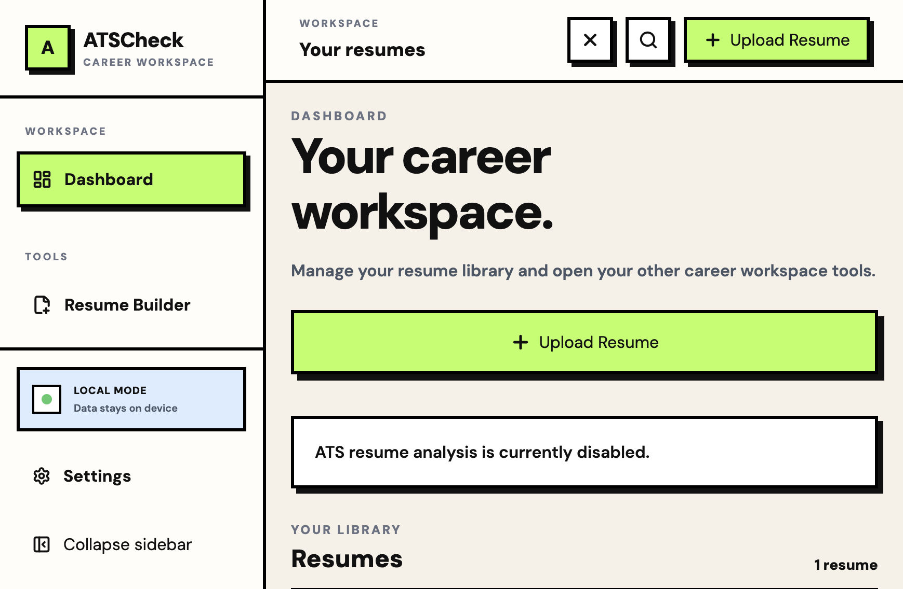
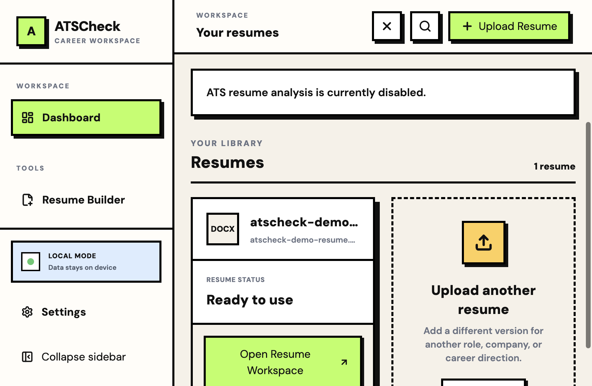
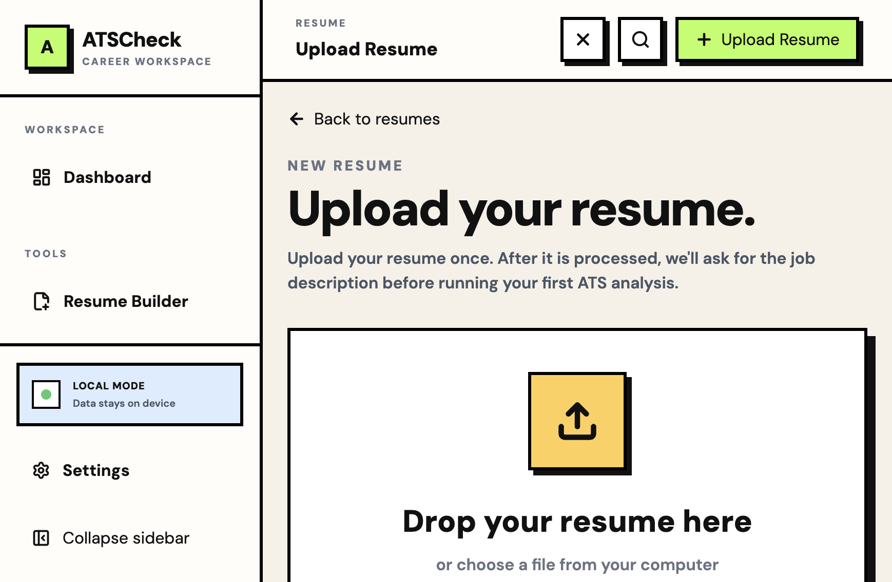
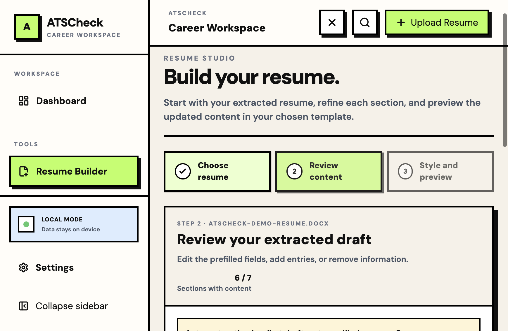
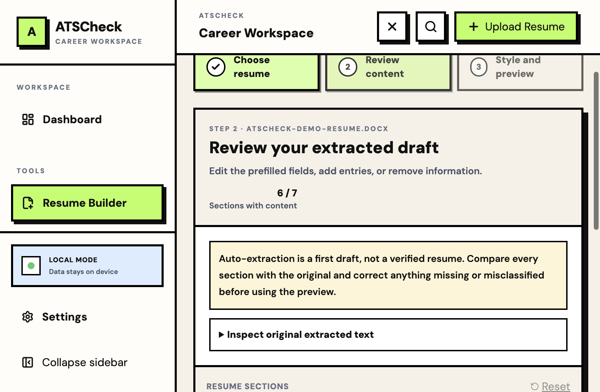
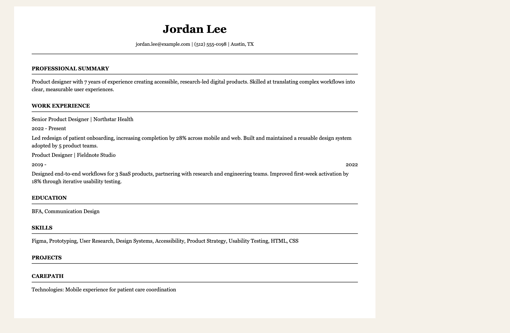
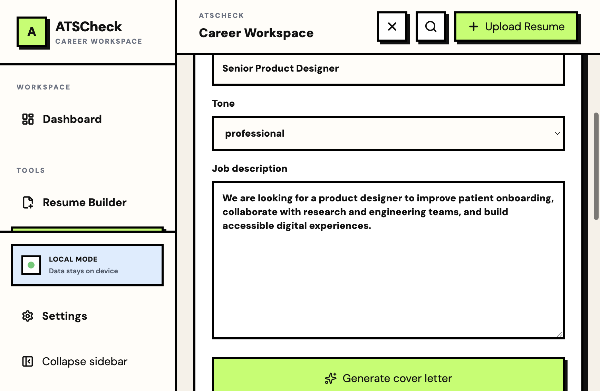
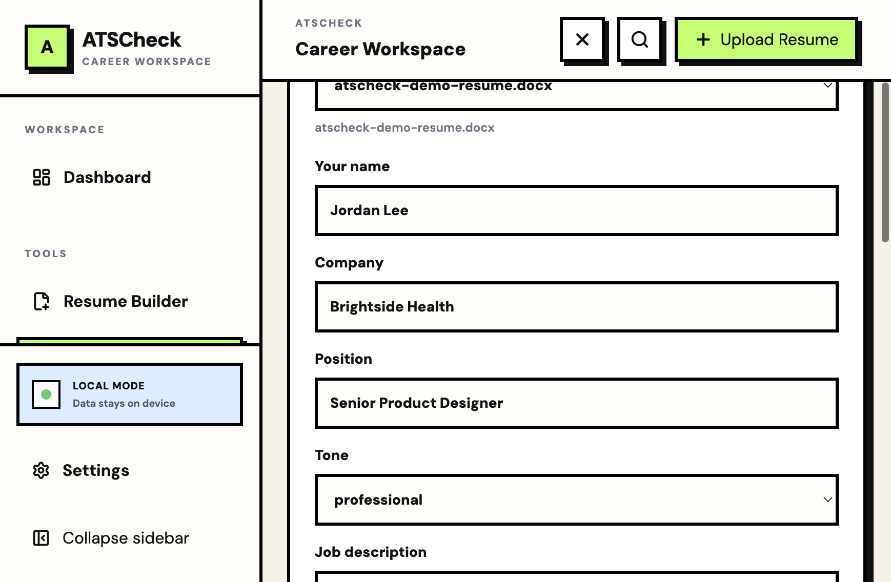
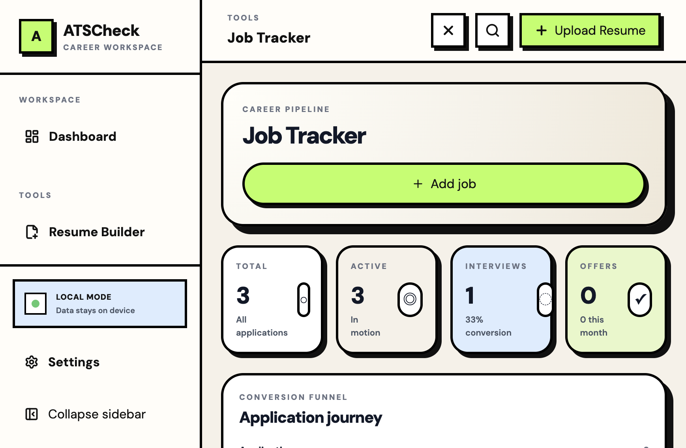
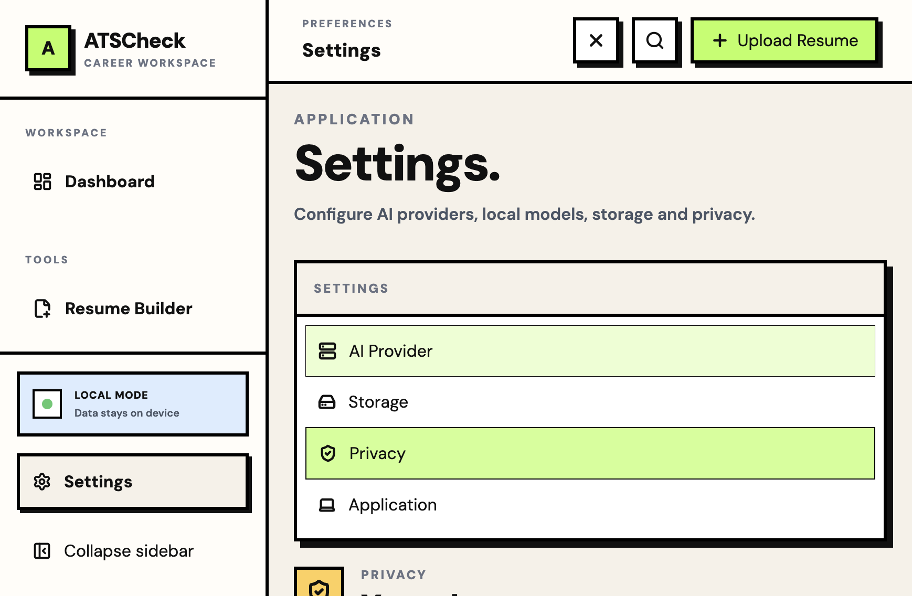

Resume files and application data are stored on your device.
A visual product tour · Desktop release 0.1.3
One workspace for your next move.
Take a quick look at how ATSCheck Desktop brings resume files, resume-building tools, cover-letter drafts, and application tracking into one local-first career workspace.

Use the resume builder, cover letters, and job tracker independently.
Bring a supported provider or run a compatible local Ollama model.
Inside the app
A tour of the workflows
01 / IMPORT & ORGANIZE
A home for your resumes
Import a PDF or DOCX resume, keep the original in your local library, and open it when you want to review or build from it. Extracted content is a first draft to verify against the source.
Selectable-text PDFs generally extract better than scanned images; OCR is not bundled with the app.


02 / EDIT & PREVIEW
Shape a resume draft
Choose a resume, inspect and edit extracted sections, then move to the page preview. The builder keeps the section editor in its own workspace so long content can be reviewed without growing the whole page.
Review names, dates, skills, and every claim before printing or saving a PDF.



03 / ROLE-SPECIFIC DRAFTING
Prepare a cover-letter request
Select a resume, add the target company and position, and provide the job description as context for a role-specific draft. Generated content requires a configured AI provider or local model.


04 / KEEP THE SEARCH MOVING
Track application progress
Record applications, update their status as they move forward, and keep follow-up details close at hand. The tracker dashboard also summarizes activity across the sample pipeline.
Applicant and application details are synthetic. Company names may coincide with real organizations and do not imply affiliation.

05 / SETTINGS & DATA
Understand your privacy choices
Settings bring provider, storage, privacy, and application controls together. Resume files and career data stay local by default; when you request cloud AI processing, relevant content is sent directly to the provider you selected.
Configure Ollama separately if you prefer local model inference. Provider availability and data practices are set by those services.

Ready to try it?
Set up your own workspace.
Download the desktop app or follow the install guide to get started.